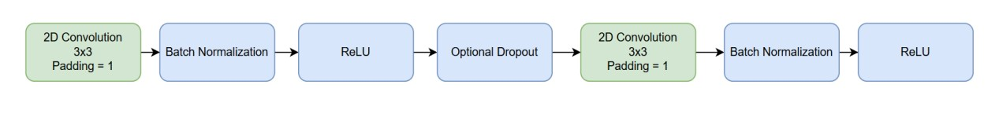
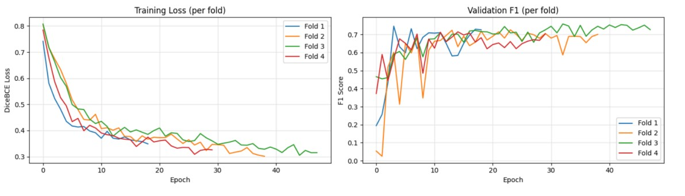
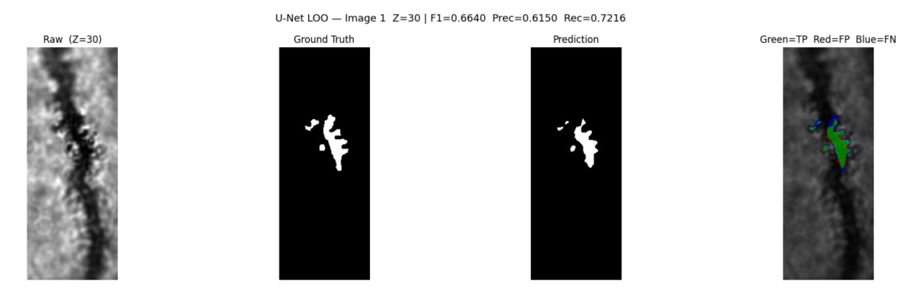

Automated neuroscience research is often hindered by the difficulty of discriminating in-focus foreground structures from out-of-focus background noise in transmission microscopy. In this project, we utilized a custom-weighted U-Net to achieve a high F1 score while remaining computationally efficient, ensuring critical dendritic structures are captured for downstream neurological analysis.
A 2D U-Net trained on axial slices uses a composite Dice and weighted binary cross-entropy loss function to handle severe foreground/background class imbalance. Inference runs slice-by-slice on unseen volumes, followed by morphological post-processing. Leave-one-out cross-validation across four annotated volumes achieved a mean F1 score of 0.6811 ± 0.0298, with an average inference time of 0.5s per volume.

Encoder architecture
Leave-one-out cross-validation across four annotated volumes achieved a mean F1 score of 0.6811 ± 0.0298, with an average inference time of 0.5s per volume.

Training results

Evaluation results visualization